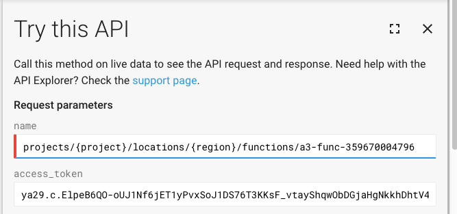
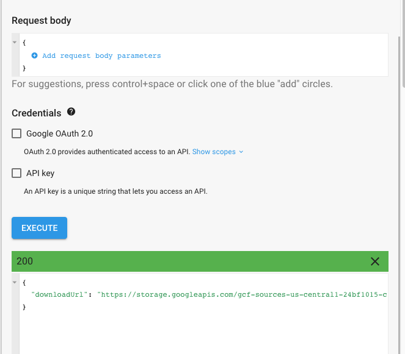

python3 thunder.py create a3password python3 thunder.py destroy a3password
In this level, the secret is hidden somewhere in the cloud infrastructure. Use the given compromised credentials to find it
The credentials have the permission cloudfunctions.functions.list
List the cloud functions in the project:
gcloud functions list
Get more information about the function:
gcloud functions describe [function]
Try calling the function:
curl [httpsTrigger]
The function returned a 403 response, meaning you need to authenticate your request. Google's documentation for cloud function authentication can be found here.
To authenticate the request, we need to include an "identity" token (different than an "access" token) in the request.
Generate an identity token for the service account:
gcloud auth print-identity-token
Call the function using the token:
curl [httpsTrigger] -H "authorization: bearer [identity-token]
Or, do this in one command:
curl [httpsTrigger] -H "authorization: bearer $(gcloud auth print-identity-token)"
The function wants a "password" argument. Include it by adding "?password=[password]" to the end of the url.
The credentials you are using have the permission cloudfunctions.functions.sourceCodeGet. Use it to figure out what the function is doing.
Use the cloudfunctions REST API method projects.locations.functions.generateDownloadUrl to download the source code of the function.
Go to the REST reference here. This documentation describes how to make a request to the API to create a link to download the source code of a cloud function.
In this case, you can use the "Try this API" feature on the right. Fill in the "name" field, formatting it as the documentation specifies. You will also need an access token, which is not the same as the identity token you generated earlier. To generate an access token, run:
gcloud auth print-access-token
In the "Try this API" window, click "show standard parameters," and paste the access token into the field "access token."
Leave the request body empty, and uncheck both "Google Oauth 2.0" and "API key," as we are using the access token for authentication. Click execute, and download the source code by curling or browsing the link given in the response.
In main.py, we see in line 19 that the function expects XOR_PASSWORD, an environment variable, to be equal to the result of the bitwise xor of the entered password and XOR_FACTOR (password ^ XOR_FACTOR).
XOR_FACTOR is a constant in the code, and XOR_PASSWORD is an environment variable that can be found by running:
gcloud functions describe [function]
To find the password, compute the result of XOR_PASSWORD ^ XOR_FACTOR. Call the function, passing the correct password to the "password" argument.